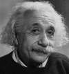

Albert Einstein (1879–1955) ölümünden kısa süre önce bir arkadaşına şaşırtıcı bir itirafta bulundu. Zamanının en ünlü düşünürü olan Einstein Nobel ödülü kazanmış, fizik ve matematik alanlarında devrim yapmış ve bilimsel dehanın sembolü haline gelmişti. Ancak Einstein eğer bir kere daha dünyaya gelirse tesisatçı olmak istediğini söylüyordu.

Gerçekten de Einstein’in kendi başarıları konusunda çelişkileri vardı. Buluşları ona büyük bir takdir kazandırmıştı. Ancak aynı zamanda atom bombasının keşfine giden yolun önünü açmıştı. 1945 yılında Hiroşima ve Nagasaki’nin imhası büyük ölçüde onun bilimi sayesinde mümkün olabilmişti. Vicdan azabı çeken ünlü dahi, Bertrand Russell’a (1872–1970) yazdığı son mektubunda nükleer silahların yasaklanması gerektiğinden bahsediyordu.
Einstein Almanya’daki Ulm şehrinde doğdu. 1894 yılında ülkeden ayrıldı ve 1896 yılında askerden kaçmak için vatandaşlıktan çıktı. 1900 yılında İsviçre’deki bir üniversiteden mezun oldu. Bern’deki İsviçre Patent Bürosu’nda çalışmaya başladı. 1905 yılında patent bürosunda tam zamanlı çalışırken Annalen der Physik (Fizik Yıllıkları) isimli Alman yayınına dört yazı gönderdi. Bu yazıların her biri fiziğin temellerini sarstı. Makalelerinde görelilik kuramı, kuantum fiziği ve ünlü E=mc2 eşitliği açıklanıyordu. Bu dört makaledeki buluşları sayesinde 1921 yılında fizik dalında Nobel ödülü almaya hak kazandı.
1914-1932 yıllları arasında Almanya’nın en prestijli araştırma kurumu olan Kaiser Wilhelm Fizik Enstitüsü’nde profesörlük yaptı. Berlin’de karşılaştığı anti semitizmin onun politik görüşleri üzerinde önemli bir etkisi olacaktı (“Berlin’e geldiğim zaman bir Yahudi olduğumu fark ettim. Kimliğimin farkına varmamı Yahudilerden ziyade onlara borçluyum,” diye yazar).
Hitler iktidarı ele geçirince Einstein ülkeden ayrılmak zorunda kaldı. ABD’nin New Jersey eyaletindeki Princeton’da İleri Araştırmalar Enstitüsü’nde çalışmaya başladı. Hayatının kalan kısmını burada geçirecekti. 1939 yılında Franklin D. Roosevelt’e (1882–1945) ünlü bir mektup yazdı. Buluşlarının, Nazilerin inanılmaz bir yıkıcı güce sahip atomik silahlar yapmalarına imkan vereceğini düşünüyordu. Hayatının geri kalan kısmında ise yazdığı bu mektubun Amerikalılar’ı nükleer silah yapmaya teşvik ettiğine inandı.
Savaştan sonra nükleer silahlara karşı çıktı. Amerika’daki ırksal ayrımcılığa karşı mücadele etti. Amerikan dış politikasını ve McCarthiciliği eleştirdi. Yetmiş altı yaşında Princeton’da öldü.
Ek Bilgiler
1- II. Dünya Savaşı yıllarında Müttefikler yararına bağış topladı. Ünlü “1905” yazılarından bir tanesini el yazısıyla yeniden yazdı. Bu metin, bir açık arttırmada 6 milyon dolara satıldı.
2- Nadir bir element olan Einsteinium 1952 yılında adını ondan aldı. Periyodik tabloda 99 numaralı olan element ilk olarak ABD’nin Pasifik Okyanusu’ndaki hidrojen bombası denemeleri sırasında oluşan çöküntüde bulunmuştu.
3- On yıllar boyunca çeşitli aktörler Einstein’i canlandırdı. Walter Matthau (1920–2000) – I.Q (1994), John Ehrin (1908–1995) - Bill and Ted’s Bogus Journey (1991), Robert Downey Jr. (1965–) - That’s Adequate (1989) ve Yahoo Serious (1953-) - Young Einstein (1988).